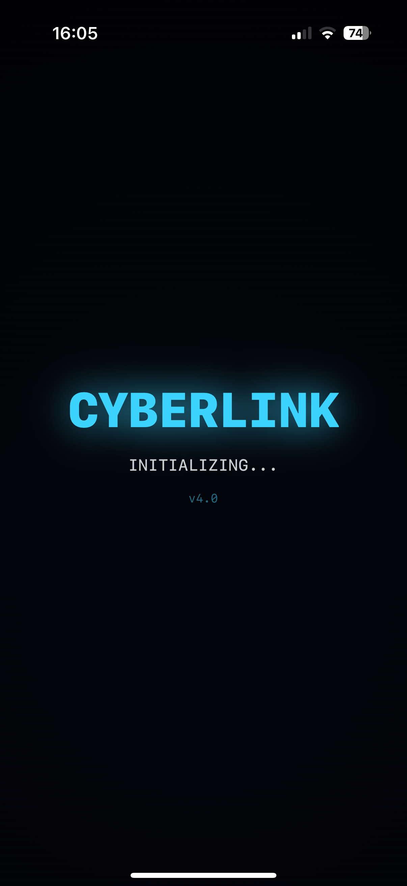

> Gameplay


> Overview
CyberLink is a fast-paced node-link puzzle game built in SwiftUI. Each level drops you onto a grid of nodes with a ROOT node and a BREACH node somewhere on the board — the goal is to trace a path between them before the timer runs out, routing around blockers and picking up bonus nodes along the way.
> Core Mechanics
- Root → Breach linking — draw a path from the root node to the
breach node to confirm the hack and compromise it
- Block nodes — locked nodes that must be routed around
- +Time and +Score nodes — optional pickups along the way that extend
the clock or boost your score
- Threat meter — climbs as you play, adding pressure on top of the timer
- Hint system — a limited number of hints per level for when a path isn't
obvious
- Best score tracking — your best run per level is saved and shown
alongside your current score
> Operators
Before a run, you choose an operator, each with a distinct passive that changes how you play:
GHOST - Wrong paths cost no time penalty. Clean hands, no traces. ROGUE - Double score. Timer runs 25% faster. High risk, high reward. DAEMON - Moving blockers at half speed. Control the grid. Own the net.
> Mission Types
Levels are organised into five mission types — Breach, Sweep, Ghost, Sprint, and Survive — each changing the objective and pacing rather than just reskinning the same puzzle.
> Feel & Polish
Particle bursts on successful breaches, grid events that shake things up mid-level, and
sound handled through a dedicated SoundEngine — the goal throughout has been
to make a simple puzzle mechanic feel satisfying to execute, not just correct.
> Related Prototype: CyberMatch
Alongside CyberLink, I've been prototyping CyberMatch — a match-3 style puzzle built on a 7×8 grid with six distinct tile types (data chips, optics, neural, credits, virus, pulse). Each tile carries both a colour and a letter/icon overlay so the game stays readable for colour-blind players, with haptic feedback tuned per action (light/medium/heavy taps, success and error buzzes). It's earlier-stage than CyberLink but built with the same attention to feel.
> Why I Built This
I wanted a project that let me focus on game feel — timing, haptics, particle feedback — rather than just mechanics, using a hacking-themed puzzle as the vehicle. It's also been a good excuse to get properly comfortable with SwiftUI's animation and state-management model outside of a typical CRUD-app context.